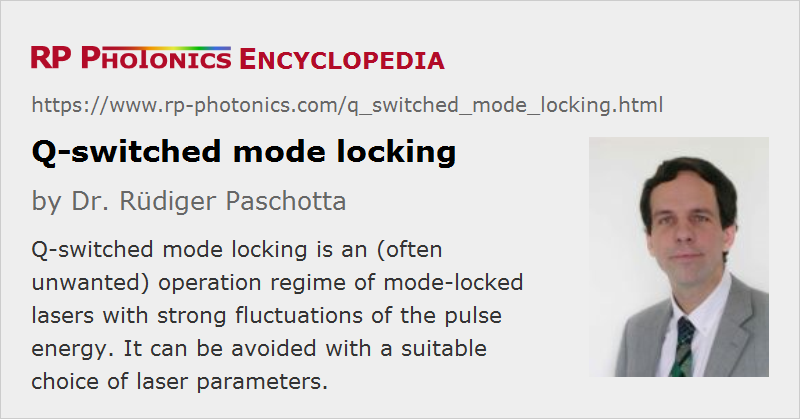

Q-switched Mode Locking
Definition: an operation regime of mode-locked lasers with strong fluctuations of the pulse energy
Categories: light pulses, methods
How to cite the article; suggest additional literature
Author: Dr. Rüdiger Paschotta
Q-switched mode locking is an operation regime of a passively mode-locked laser where the intracavity pulse energy undergoes large oscillations, related to a dynamic instability (undamped relaxation oscillations). The pulse energy may even become extremely small for a number of subsequent pulses, before the next bunch of pulses is generated.
The laser dynamics can be investigated using relatively simple dynamic models. With certain approximations, it is possible to derive a criterion for stable mode locking (i.e. without Q-switched mode locking or Q-switching instabilities) above a certain Q-switched mode locking threshold [3]:
where Ep is the intracavity pulse energy, Esat,g is the saturation energy of the gain medium, Esat,a is the saturation energy of the saturable absorber, and ΔR is the modulation depth of the absorber.
The origin of Q-switching instabilities is that the saturable absorber typically “rewards” higher pulse energies with lower resonator losses, so that the damping of the relaxation oscillations is reduced. Whether or not this leads to QML depends on other factors; depending on various parameters, gain saturation may be sufficient for stabilizing the pulse energy.
The regime of Q-switched mode locking is in some cases fairly stable (i.e., leads to bunches of pulses with reproducible properties), in others very unstable (exhibiting strong fluctuations of parameters such as maximum pulse energy, pulse duration, and optical phase). Particularly in the latter case, the term Q-switching instabilities is often used. Usually, the stability is good in cases where the pulses do not become too weak between the bunches. Otherwise, the pulses in each bunch are basically created from noise (particularly from spontaneous emission), and the pulse parameters cannot reach a steady state. This means that particularly in those situations where Q-switched mode locking leads to large maximum pulse energies, the operation is typically noisy. Therefore, Q-switched mode locking is not widely used in applications, but normally considered an unwanted phenomenon. It can be suppressed
- by choosing a gain medium with high laser cross sections
- by using a resonator design with small mode areas
- by using a long resonator with low losses and high intracavity power
- by inserting a power-limiting element in the resonator
- via optimization of the saturable absorber (e.g. exploiting a roll-over of the saturation curve, as can be caused by two-photon absorption)
- with electronic feedback techniques
For lasers operating in extreme parameter regions (e.g. very high output powers or very high pulse repetition rates), the suppression of Q-switching instabilities may require compromises, such as accepting longer pulse durations, lower laser efficiencies, or a high thermal load on the saturable absorber.
Note that contrary to a common belief, the QML threshold normally does not depend on the upper-state lifetime, but only on the laser cross sections (via the saturation energy): e.g., quenching effects can reduce the upper-state lifetime without affecting the QML threshold.
Questions and Comments from Users
Here you can submit questions and comments. As far as they get accepted by the author, they will appear above this paragraph together with the author’s answer. The author will decide on acceptance based on certain criteria. Essentially, the issue must be of sufficiently broad interest.
Please do not enter personal data here; we would otherwise delete it soon. (See also our privacy declaration.) If you wish to receive personal feedback or consultancy from the author, please contact him e.g. via e-mail.
By submitting the information, you give your consent to the potential publication of your inputs on our website according to our rules. (If you later retract your consent, we will delete those inputs.) As your inputs are first reviewed by the author, they may be published with some delay.
Bibliography
| [1] | H. Haus, “Parameter ranges for CW passive mode locking”, IEEE J. Quantum Electron. 12 (3), 169 (1976), doi:10.1109/JQE.1976.1069112 |
| [2] | F. X. Kärtner et al., “Control of solid-state laser dynamics by semiconductor devices”, Opt. Eng. 34, 2024 (1995), doi:10.1117/12.204794 |
| [3] | C. Hönninger et al., “Q-switching stability limits of cw passive mode locking”, J. Opt. Soc. Am. B 16 (1), 46 (1999), doi:10.1364/JOSAB.16.000046 |
| [4] | T. R. Schibli et al., “Suppression of Q-switched mode locking and breakup into multiple pulses by inverse saturable absorption”, Appl. Phys. B 70, 41 (2000), doi:10.1007/s003400000331 |
| [5] | A. Schlatter et al., “Pulse energy dynamics of passively mode-locked solid-state lasers above the Q-switching threshold”, J. Opt. Soc. Am. B 21 (8), 1469 (2004), doi:10.1364/JOSAB.21.001469 |
See also: Q-switching instabilities, laser dynamics, relaxation oscillations, mode locking, modes of laser operation
and other articles in the categories light pulses, methods
|  |
If you like this page, please share the link with your friends and colleagues, e.g. via social media:
These sharing buttons are implemented in a privacy-friendly way!